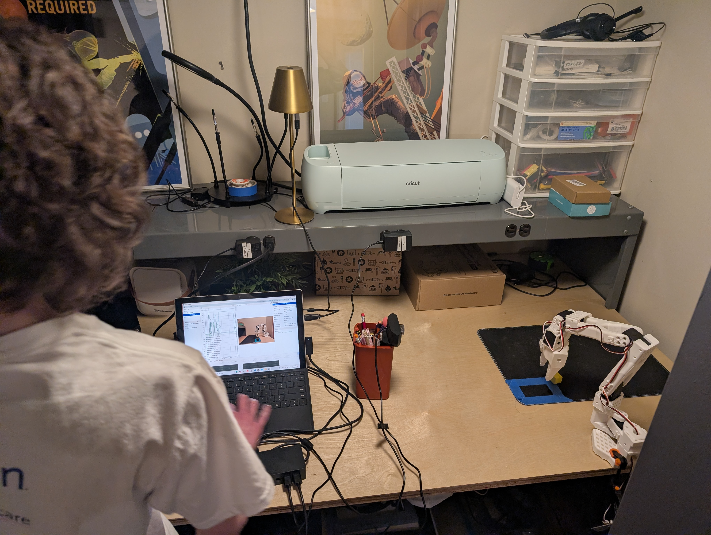
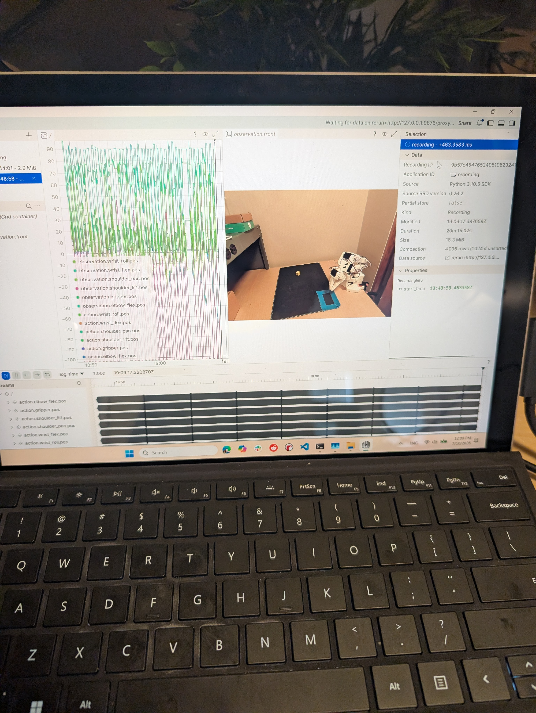
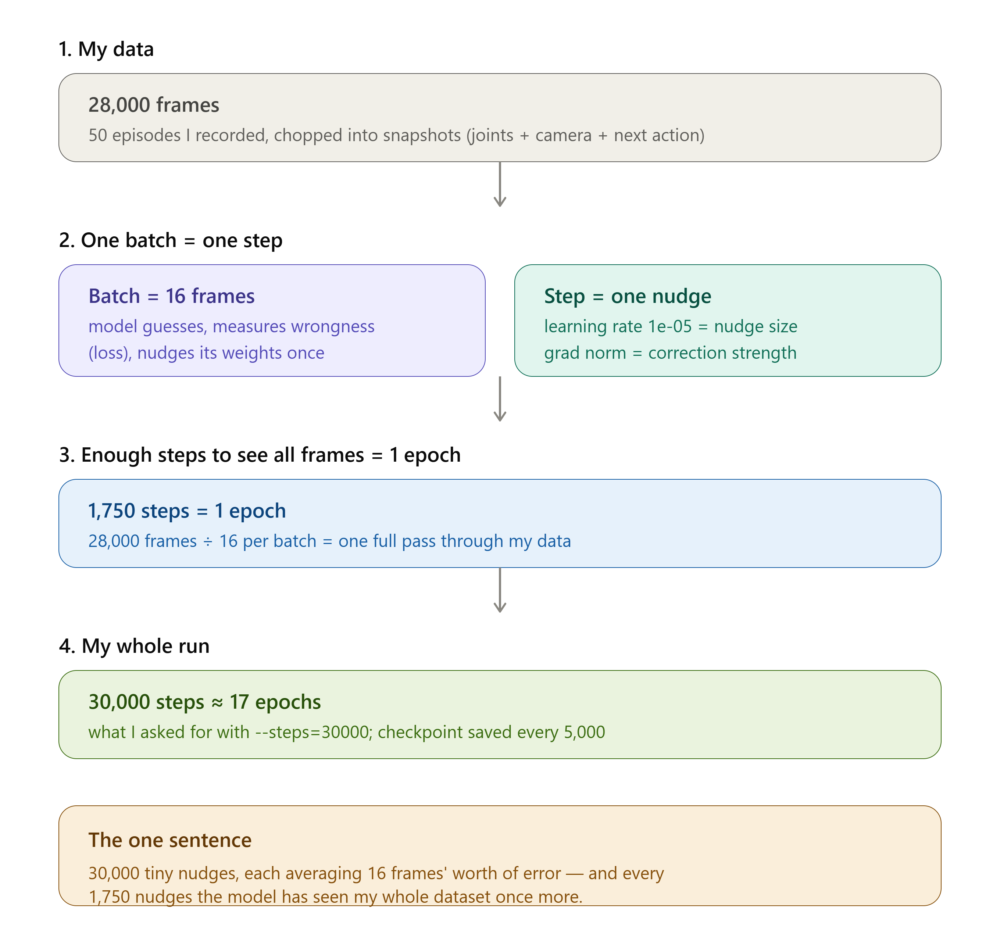

SO-101: teaching a cheap robot arm to do useful things
Field Notes are the writing, and this is the workbench; Lab Notes follows the experiments I am running
on my SO-101, a small and inexpensive robot arm that you build and program yourself. The approach is
called imitation learning: the arm learns a task by watching me demonstrate it over and over, rather
than by following rules I write out by hand. This page tracks the datasets and the policies that come
out of that process, where a policy is just the trained model that decides what the arm should do at
each moment. You will find the runs in simulation and on the real arm, the dead ends along the way,
and the infographic that ties the whole story together, all in one place.
Progress
This is the journey so far, in order: recording the demonstrations, a first training attempt that
failed, and the retrain that finally worked.
Step 1 · Morning one
Recording 50 episodes
I spent the first morning teleoperating the SO-101, which means controlling the arm by hand in
real time while a computer records everything it does. I ran through the task over and over
until I had fifty episodes, where an episode is just one complete recording of the arm doing the
task from start to finish. Each episode logs the arm's joint positions, the camera images, and
what action came next; this raw data is what every later step depends on.
View the dataset →

The bench: the arm, the tape-marked workspace, and the laptop I record episodes from.

Episode ten of fifty, with the joint and action data streaming live into Rerun, the tool I use to watch what the arm is doing while I record.
Step 2 · First attempt
I trained a policy, and it glitched
This was the first training pass on the fifty episodes, where training just means showing the
model all of that recorded data over and over so it can learn a policy of its own. On the real
arm the policy moved, but it drifted off course and stuttered almost immediately. I was not
tracking the run yet, meaning I had not logged any of the numbers that show how training is
going, so I had no real signal on why it was failing.
View this policy (v1) →
Step 3 · Retrain, with tracking
I logged the run to Weights & Biases, and it worked
I reran training, but this time I logged everything to Weights & Biases, or W&B for
short. It is a tool that tracks a training run over time and charts numbers like loss, a measure
of how wrong the policy's predictions are, so you can actually see whether the model is
improving. I trained for 30,000 steps, roughly seventeen full passes over the whole dataset; the
training charts and the infographic
below walk through that math in more detail. This time the policy held the task together on the
real arm.
View this policy (v2) →
Training charts
This report shows three curves from the v2 training run, the one that worked. Loss is the overall
number for how wrong the policy's predictions are; it should trend downward as training goes on. L1
measures that same kind of error more directly, as the average distance between the arm position the
policy predicted and the real one. KLD, short for KL divergence, is a more technical measure of how
much the model's internal representation is drifting; it matters less for this story, but flat and
stable is a good sign, while wild swings would not be. There is no v1 run tracked, so this is not a
before-and-after comparison, just the curve that held together this time.
The infographic
This is the training math in plain language: how fifty recorded episodes turn into 28,000 individual
frames of data, and what "30,000 steps" actually means, broken down into nudges and epochs, where an
epoch is one complete pass through the entire dataset.

Resources
Here is the dataset, both saved versions of the trained policy, each one called a checkpoint, and the
training run behind them.
The raw dashboard for the v2 run; it may require access if the project is set to private.
What's next
These are the open threads on the bench right now.
In progress
Sim-to-real for episode efficiency. Sim-to-real means training or testing a policy
in a simulated version of the world before trying it on the real arm. The idea here is to see how
few real demonstration episodes I can get away with, by comparing policies trained on fewer real
episodes plus simulated data against the current real-only baseline.
Planned
Migrate to Gr00t N1.7. The plan is to swap the current policy, which was trained
entirely from scratch on my own data, for NVIDIA's Gr00t N1.7. It is a foundation model, meaning a
large model already pretrained on a huge amount of robot data that I can fine-tune on my own
smaller dataset. I want to compare how much data it needs, and how good its rollouts, meaning its
actual runs on the arm, look against the from-scratch policy.
Exploring
Broader task set. Beyond the current pick-and-place task, I want to test whether
the same data pipeline, meaning the same process for recording, training, and evaluating,
generalizes to new objects and new kinds of manipulation without having to record an entirely new
dataset from scratch.